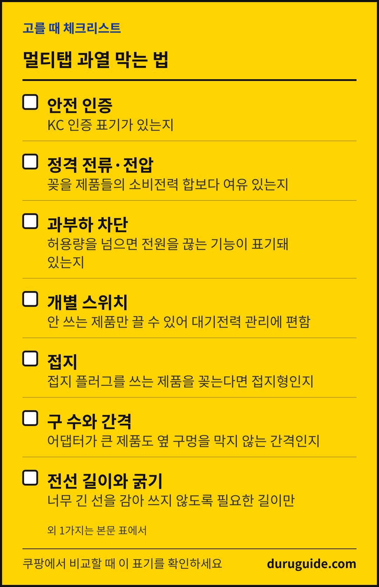

멀티탭 과열 막는 법, 허용 전력 표기 읽고 고르기
안 사도 되는 경우
꽂힌 제품을 나누고 먼지를 닦고 감긴 선을 푼 뒤 뜨거움이 사라졌다면 바꾸지 않아도 돼요. 그을림·녹은 자국이 있으면 바로 교체하세요.
이런 상황이죠
멀티탭 플러그를 뽑다가 손에 닿는 부분이 뜨끈하거나, 콘센트 구멍 주변이 누렇게 변한 걸 본 적이 있으실 거예요. 겨울에는 전기히터, 전기장판, 전기포트처럼 전기를 많이 쓰는 제품을 한 멀티탭에 몰아 꽂기 쉬워서 과열 이야기가 자주 나와요. 멀티탭을 바꾸기 전에 지금 어떻게 쓰고 있는지부터 보는 게 먼저예요.
왜 생기나
멀티탭이 뜨거워지는 이유는 대부분 아래 중 하나예요.
- 허용 전력 초과 — 꽂힌 제품들의 소비전력 합이 멀티탭이 감당할 수 있는 양을 넘으면 전선과 접점이 달아올라요.
- 헐거운 접촉 — 플러그가 덜 들어갔거나 오래 써서 접점이 벌어지면 그 부분에서 열이 나요.
- 먼지와 습기 — 플러그와 콘센트 사이에 쌓인 먼지에 습기가 더해지면 불꽃이 튀는 트래킹 현상이 생길 수 있어요.
- 감긴 전선 — 남는 선을 둘둘 감은 채 쓰면 열이 빠져나가지 못해요.
- 멀티탭에 멀티탭 — 여러 개를 이어 꽂으면 맨 앞 멀티탭과 벽 콘센트에 부하가 몰려요.
사기 전에 먼저 해볼 것
- 꽂힌 제품의 소비전력 더하기 — 제품 뒷면이나 설명서에 W(와트)로 적혀 있어요. 히터나 전기포트처럼 열을 내는 제품은 수치가 큰 편이에요.
- 멀티탭 표기 읽기 — 멀티탭에 적힌 정격 전류(A)와 정격 전압(V)을 곱하면 대략 허용 전력이 나와요. 이 안에서도 여유를 두고 쓰는 게 안전해요.
- 고전력 제품 분리 — 난방기처럼 전기를 많이 쓰는 제품은 설명서에 벽 콘센트 직접 사용을 권하는 경우가 많아요. 설명서를 확인해 보세요.
- 먼지 청소 — 플러그를 모두 뽑은 뒤 마른 천으로 먼지를 닦아요. 물티슈는 쓰지 마세요.
- 감긴 선 풀기, 이어 꽂기 정리 — 이것만으로도 열이 덜 나는 경우가 있어요.
이렇게 정리한 뒤 뜨거움이 사라지면 멀티탭을 바꾸지 않아도 돼요. 반대로 그을림, 녹은 자국, 타는 냄새가 있다면 정리로 해결되는 단계가 아니니 바로 사용을 멈추고 교체하세요.
고를 때 체크리스트
| 확인할 것 | 보는 기준 |
|---|---|
| 안전 인증 | KC 인증 표기가 있는지 |
| 정격 전류·전압 | 꽂을 제품들의 소비전력 합보다 여유 있는지 |
| 과부하 차단 | 허용량을 넘으면 전원을 끊는 기능이 표기돼 있는지 |
| 개별 스위치 | 안 쓰는 제품만 끌 수 있어 대기전력 관리에 편함 |
| 접지 | 접지 플러그를 쓰는 제품을 꽂는다면 접지형인지 |
| 구 수와 간격 | 어댑터가 큰 제품도 옆 구멍을 막지 않는 간격인지 |
| 전선 길이와 굵기 | 너무 긴 선을 감아 쓰지 않도록 필요한 길이만 |
| 안전 덮개 | 아이가 있다면 구멍을 막는 덮개가 있는지 |
이런 분께는 맞지 않아요
벽 콘센트 자체가 뜨겁거나 차단기가 자주 내려간다면 멀티탭을 바꿔도 해결되지 않아요. 이 경우는 집 배선 문제일 수 있으니 전기 점검을 받아 보세요.
추천 제품 찾기
먼저 멀티탭에 꽂을 제품과 각각의 소비전력을 적어 보고, 그 합보다 여유 있는 제품을 고르세요. 쿠팡에서 멀티탭을 볼 때는 KC 인증, 정격 전류, 과부하 차단, 접지 여부, 구 수와 간격 표기를 비교해 보세요. 현재 가격은 쿠팡에서 확인해 주세요.

쿠팡에서 멀티탭 보기
위 표의 표기를 비교해 보세요.
현재 가격은 쿠팡에서 확인해 주세요.
이 포스팅은 쿠팡 파트너스 활동의 일환으로, 이에 따른 일정액의 수수료를 제공받습니다.